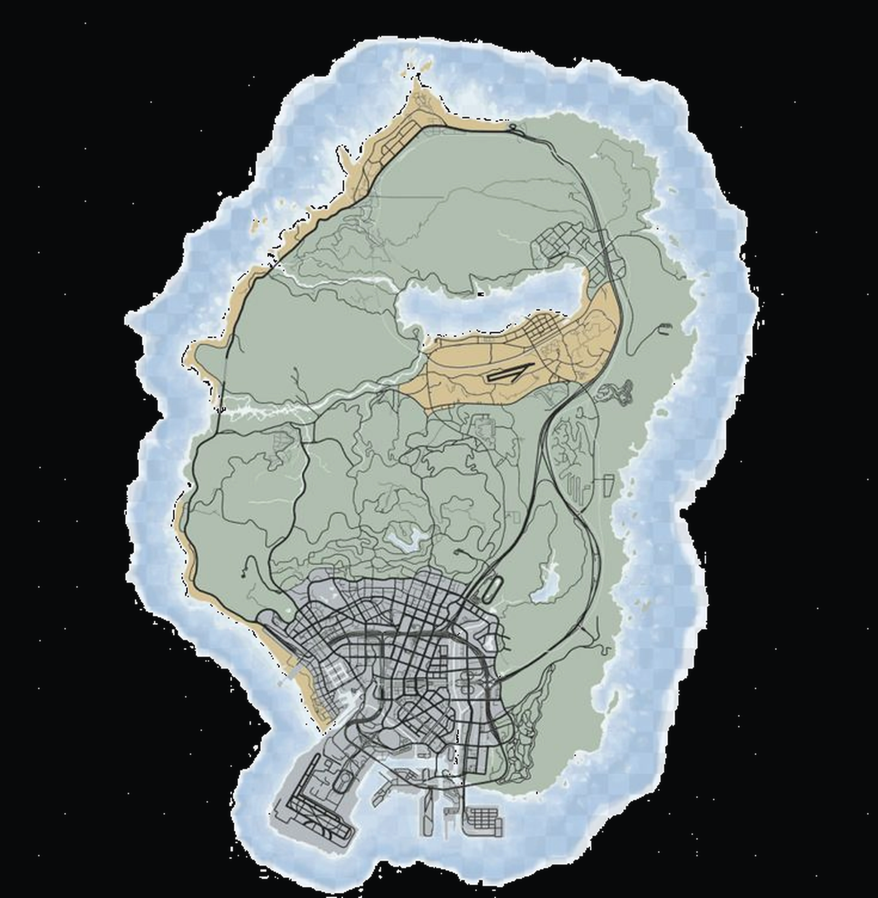

RED MOON
PUB
Főoldal
Itallap
Rendezvények
Galéria
Rólunk
Lokáció
Red Moon Club
STAFF
◖))
AMBIENCE
VOLUME
45
☰
☰
SEE CITY / INTERAKTÍV TÉRKÉP
Húzd · görgess · két ujjal nagyíts
ATLAS
⌖
⛶

RED MOON PUB
LOS SANTOS
GTA V / ATLAS
RED MOON PUB
SEE CITY RP
+
−
↺
INTERAKTÍV ·
100%
×
SEE CITY · LOCATION
RED MOON PUB
Nyisd meg a helyet a térképen
n>